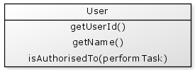
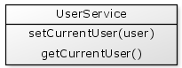

The session scope is ideal for storing information about the current user of an application. For many applications, whenever we need to store this kind of information we just store it directly in a session variable:
Sometimes, this data is wrapped up in a "user" struct and stored in the session:
Session data is available globally which means that any page, custom tag or component can immediately access it. This provides a great convenience as the data is very simple to access; if you need the current user's id just grab session.user.userId.
However as the number of session variables increases and the number of pages that access them grows this data can become very difficult to manage. We may have so many session variables that the purpose of some of them is difficult to determine. We may need to make some changes to the structure of some of these variables. For example, a variable may need to be renamed due to a change in the system design, another variable needs to be changed from a list to a struct, another variable may have become obsolete and needs to be removed. These types of changes can be quite complex to make due to their widespread global nature. In even medium size systems changes such as there are often so difficult that they cannot be performed.
There are some object oriented concepts that can assist in making these types of problems more manageable.
Our first step is to create a User object that will contain all of the data we need.

As a side note, it is very important that this user object strictly represents the current user and should not contain any functions that are not specifically about the current user. For example, this user object must not have any functions such as getUserById(userId) or getUserRoles(userId) which are operations to find information about other users. These types of functions belong in other objects.
Our user object will sit in the session scope, as usual:
{% highlight cfm %}Directly accessing session.user from any page or component that needs to use the current user is not permitted.
This is key to improving the design of the existing code. Rather than accessing the session directly from our application code we need an object that will perform this task for us.
A UserService object is a very "big picture" object that performs a variety of user related tasks. For now, let's consider that its only purpose is to help us gain access to the session.user object.
Typically a UserService object will be created once on application startup and will be placed in the application scope.
{% highlight cfm %}From your application's perspective, session.user represents the "current user", so no matter what page you are on session.user always contains this "current user".
Let's add two functions to the UserService:

And in code:
{% highlight cfm %}In the rest of our application to access the current user we would write something like this:
{% highlight cfm %}So we have created a very simple mechanism to access our current user without directly referring to the session scope. Every piece of code in the system needs to go through the application.userService to find the current user.
This relatively simple change isolates your application from many difficulties that can arise from using the session scope directly. Let's consider some of the implications of this change:
The user's data is now accessed through functions on the user object directly. Rather than using:
{% highlight cfm %}We now use:
{% highlight cfm %}If we need to change the permission structure to be a query rather than a struct, for example, then the second scenario shields the rest of the application from this kind of change.
Previously the session data was stored as just a bunch of variables all floating together in the session scope. By placing this data behind functions in the user object it now has more organised meaning. The function names provide an "api" to our session data.
Only the userService.getCurrentUser() function accesses the session scope directly. This shields the rest of the application from any changes to how the user is stored in the session. For example, if the session.user variable needed to be renamed for any reason, or if the current user details were moved out of the session scope and into a database (to support the application without sessions), the application code would continue to call getCurrentUser() with no further impact.
There are other benefits to small changes such as these which include simplifying the testing of your code. The session data is now actually stored inside an object which does not need to be in the session. It can be created and tested as a standalone object. The fact that we choose to store it in the session is incidental.
For some, session data may be accessed via a separate component which is often called a 'Session Facade', although this is not strictly a facade. This can provide an additional layer of protection for your session data.
Lastly, the examples above access the UserService from the application scope directly. This is also global variable access that would typically be discouraged, however encapsulating your user's session data first is perhaps a more useful immediate step for your applications.
Accessing the session scope directly is very convenient, but access to global data in this way can become very difficult to manage over time. Session data should be stored in an object to improve the meaning and organisation of the data, and access to the session itself should be hidden behind another object to allow the session access itself to be changed without affecting the rest of the application.